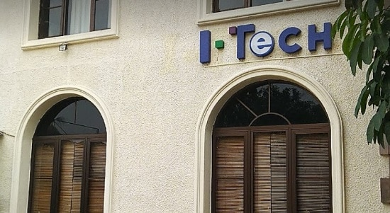

Profil kampus STT NIIT I-Tech
STTI NIIT dikelola oleh Yayasan Pendidikan Teknologi Informasi (YPTI), adalah perguruan tinggi yang menyelenggarakan program sarjana dan professional training dibidang teknologi informasi dan telah terakreditasi Badan Akreditasi Nasional Perguruan Tinggi. Dengan dukungan berbagai vendor Teknologi Informasi, STTI NIIT mengembangkan program sarjana teknologi informasi yang memiliki kompetensi di bidang networking, multimedia, komunikasi & informasi, dan komputasi seni. STTI NIIT pada awalnya (1997) adalah international training center NIIT di Indonesia, kemudian pada tahun 2003 berdasarkan SK Mendiknas No. 10/D/O/2003 menjadi perguruan tinggi yang menyelenggarakan DUAL Program yang mengkombinasikan program sarjana (S-1) Teknik Informatika dan Sistem Informasi, dengan program professional IT. STTI NIIT dikelola oleh Yayasan Pendidikan Teknologi Informasi (YPTI), adalah perguruan tinggi yang menyelenggarakan program sarjana dan professional training dibidang teknologi informasi.
Dengan dukungan berbagai vendor Teknologi Informasi, STTI NIIT mengembangkan program sarjana teknologi informasi yang memiliki kompetensi di bidang networking, multimedia, komunikasi & informasi, dan komputasi seni.
STTI NIIT pada awalnya (1997) adalah international training center NIIT di Indonesia, kemudian pada tahun 2003 berdasarkan SK Mendiknas No. 10/D/O/2003 menjadi perguruan tinggi yang menyelenggarakan DUAL Program yang mengkombinasikan program sarjana (S-1) Teknik Informatika dan Sistem Informasi, dengan program professional IT.